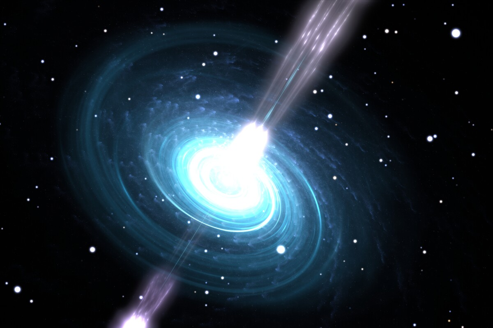
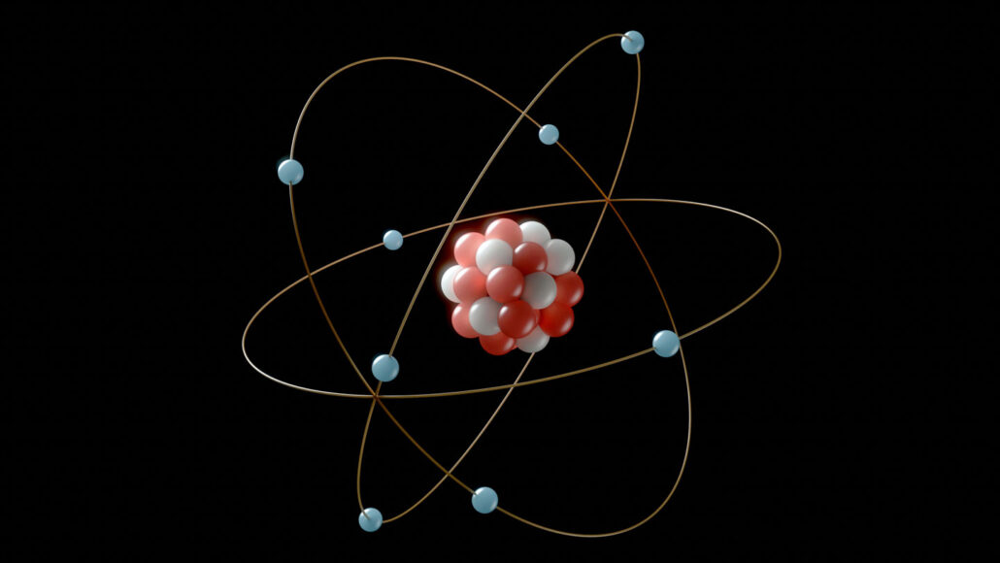
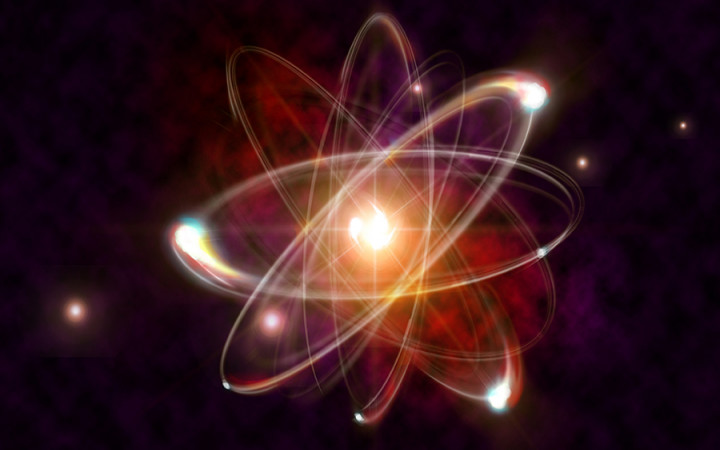
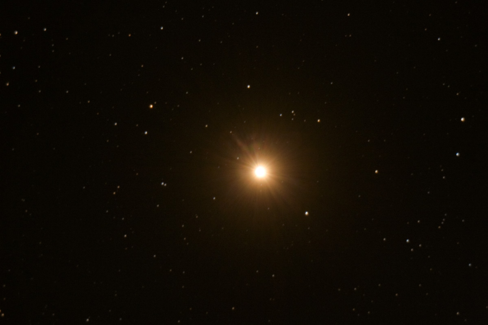
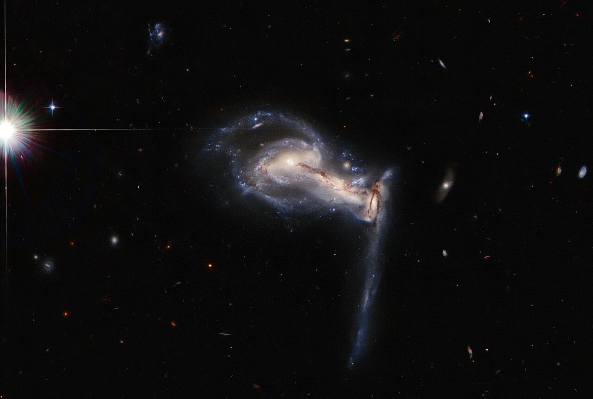
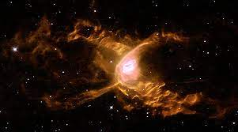
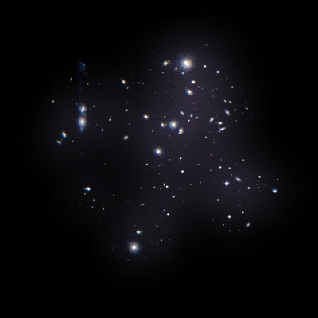

-
Neutrons and Protons
Cerca de 380 mil anos após o Big Bang, os elétrons começaram a se alojar ao redor dos núcleos atômicos.
-
Nuclei Form
No início, nosso universo não tinha galáxias, estrelas, planetas ou mesmo átomos. Tudo teve que ser criado a partir de partículas fundamentais muito pequenas, menores do que tudo que conhecemos. Como essas partículas foram geradas, ainda é uma pergunta sem resposta. Quark, glúon, elétron e fóton estão entre as primeiras partículas fundamentais formadas no Big Bang. Da combinação de partículas de quark, ainda nos primeiros segundos de vida do universo, foram formados prótons e nêutrons, os componentes dos núcleos atômicos.
-
Atoms Form
Quando a temperatura já havia esfriado um pouco, há 380 mil anos, foi a deixa para que os elétrons andarilhos que vagavam livres pelo espaço-tempo pudessem se juntar aos núcleos. Formavam-se, então, os primeiros átomos.
-
Firt Stars Form
A 180 milhões de anos após o Big Bang surgiram evidencias das primeiras estrelas.
-
Galaxies Form
Dados recentes aportam evidências de que as primeiras galáxias se formaram muito mais cedo do que os astrônomos previam, tão somente 600 milhões de anos depois do Big Bang. Isto deixa pouco tempo para que as pequenas instabilidades primordiais tivessem crescido o suficiente para que as protogaláxias formassem galáxias.
-
Nebula
O primeiro registro da observação de uma nuvem interestelar foi feito por Cláudio Ptolomeu por volta do ano de 150 d.C. Ptolomeu registrou em dois livros de sua coleção Almagesto a presença de cinco estrelas que apresentavam uma forma indefinida, como se fossem nuvens.
-
Clusters of Galaxies Form
Com relação ao período temporal, acredita-se que os primeiros aglomerados de estrelas e outros elementos começaram a se juntar 400 milhões de anos após a grande explosão que formou o Universo, chamada de Big Bang, que teria ocorrido há 13,8 bilhões de anos.